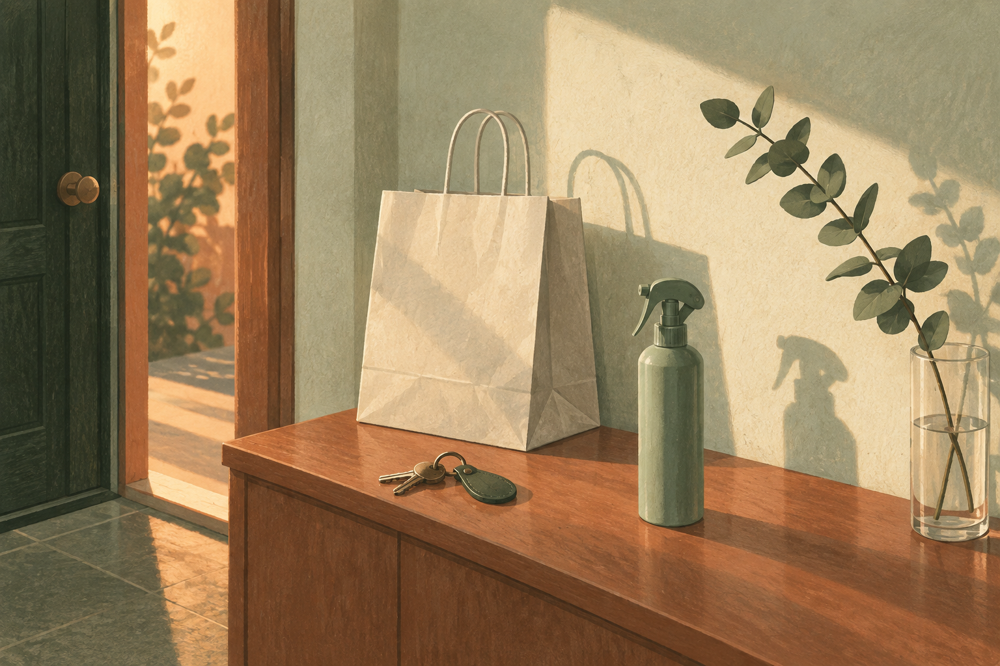
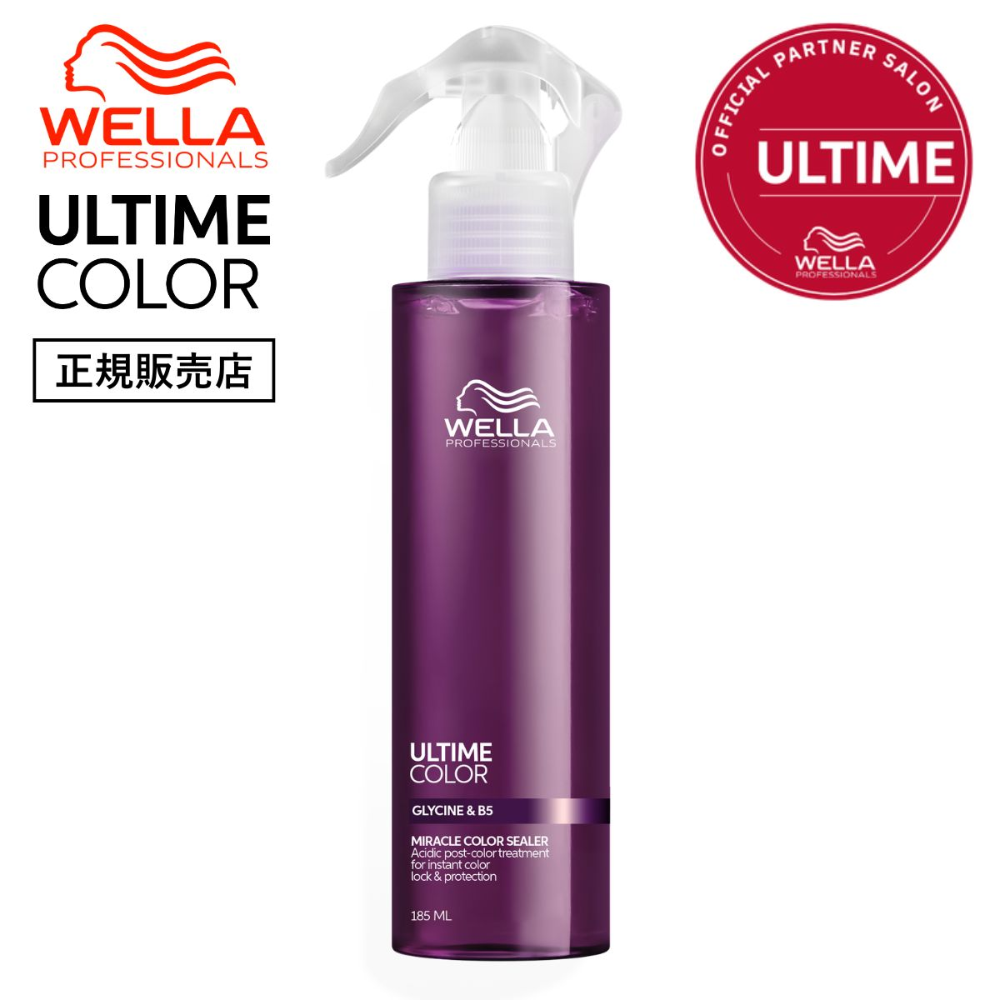

EMPATHY
こんな「カラーをした日も、家では普段どおりだった」、心当たりありませんか。
- 美容室でカラーをした日も、家に帰ったら普段どおり洗っている
- 染めた色が、思っていたより早く抜けていく
- 「色落ちしにくいシャンプー」を探したことはある
- サロンで何か言われた気もするけれど、正直あまり覚えていない
- カラー当日にシャンプーしていいのか、実はよく分かっていない
- 抜けたらまた染めればいい、と半ばあきらめている
- ヘアケア＝毎日の習慣のこと、だと無意識に思っている
一つでも頷いたなら、あと3分だけ読み進めてほしいんです。
私はこのシリーズで、13回かけてアイテムを揃えてきました。合計¥65,940。前回はうねりまで手が届いて、傷み以外の問題にも入れました。
そのあと、13本を「いつ使うものか」で並べ直してみたんです。
毎日(シャンプー、トリートメント、洗い流さないトリートメント、バーム、タオル、ドライヤー、ナイトキャップ、うねり用の乳液)。週に数回(ヘアマスク、プレトリートメント、スカルプエッセンス、スカルプブラシ)。仕上げ(香水オイル)。
毎日か、週に数回か。違いはありますが、全部「いつもの日」の習慣でした。13回書いてきて、月に1回あるかないかの日のことは、一度も書いていません。

IF NOTHING CHANGES
正直に言うと、いちばん引っかかったのは「色が抜けること」じゃありません。
13回とも、扱いを変えるべき日があると考えなかったことのほうです。
美容室でカラーをした日。私はこれまで、家に帰ってから普段どおりにシャンプーして、普段どおりに乾かして、普段どおりに寝ていました。
でもメーカーの説明を読むと、カラーの直後は髪がアルカリに傾いた状態だと書かれています。そして色がいちばん抜けやすいのは最初の数日だと、よく言われます。
つまりいちばん状態が違う日に、いちばん普通のことをしていたわけです。
ここが厄介なところで、その日は達成感があるんですよね。きれいになって帰ってくるので、もう終わった気になっている。実際には、そこから色が抜けていく数週間が始まるところなのに。
半年後も、たぶん同じです。棚には15本目、16本目の新しいアイテムが増えていて、それでもサロン帰りの夜だけは、いつもと同じことをしている。
いちばんもったいないのは、ここです。第1〜13弾で、"毎日"の答えはもう出そろっているんです。出ていないのは、扱いを変えるべき日のほうだけ。
──ただ、先に言っておきます。これを使っても色落ちは止まりません。遅くできるかどうかの話です。その線引きは後半で正直に書きます。
THE TURN
そこでたどり着いたのが、「アルタイム カラー ミラクルカラーシーラー」でした。
ここで一つ、はっきりさせておきたいことがあります。第1〜13弾で紹介してきたものは、13本とも「いつもの日」に使うものでした。
これは欠点ではありません。毎日の積み重ねがケアの土台だからです。13本とも、その役割を果たしてくれました。
一方で今回のものは、使い始める日が決まっています。メーカーの使用方法に「ヘアサロンでカラーをした日からすぐにお使いいただけます」と書かれている。日常の習慣ではなく、特定の日から始めるケアです。
言ってしまえば、第1〜13弾が"毎日をどう整えるか"。そしてこの1本が"特別な日にどう合わせるか"。毎日は13回で揃いました。14回目は、合わせるほうです。
私がこの1本を選んだ理由は、大きく3つ。
シリーズで唯一、「特別な日」に向いている
13本は毎日か週に数回かの違いで、どれも日常の習慣でした。サロンでカラーをした日は月に1回あるかないか。頻度が違う日のことを、一度も考えていませんでした。
使い始める日が、商品の説明に書いてある
カラーケアの多くは「毎日のシャンプー・トリートメント」で、工程としては第2弾や第9弾と重なります。これは「サロンでカラーをした日から」と、始点そのものが説明に書かれている数少ない1本でした。
動詞が「足す」でも「守る」でもなく「戻す」
カラー後のアルカリに傾いた状態を、酸性トリートメントでヘアカラー前の状態へ穏やかに戻す、という説明です。第1〜9弾が足す、第10〜12弾が守る・減らす、第13弾が別の問題。これは4つ目の動詞になります。
「毎日をどう整えるか」から、「特別な日にどう合わせるか」へ。13回かけて毎日を整えてきたからこそ、素通りしていた1日に目が向きました。
※pH・酸性トリートメント・カラーの定着に関する記載はメーカーの公表内容に基づくものであり、効果を保証するものではありません。色持ちの感じ方には個人差があります。
THE PRODUCT
アルタイム カラー ミラクルカラーシーラーとは
ウエラ プロフェッショナルの「アルタイム カラー」は、ヘアカラーを楽しむ髪のためのライン。その中のヘア＆スキャルプミストが、このミラクルカラーシーラーです。サロンでカラー剤を出しているメーカーが、カラーのあとに出している製品、という位置づけになります。
ブランドとしてはシリーズ初登場です。第1〜13弾で登場したオラプレックス、ケラスターゼ、リンク、LOA、資生堂プロフェッショナル、SINN PURETE、ルベル、クレイツ、ハホニコ、KINUJOとは重なりません。

- タイプ
- 洗い流さないトリートメント(カラー後用の酸性トリートメント)・トリガースプレー式
- 容量
- 185ml
- 価格
- ¥4,598(税込)/ 13本の平均¥5,072より少し下
- 向いている相手
- ヘアカラーの色持ちを長く楽しみたい人、カラー直後からホームケアを始めたい人、とメーカーは説明しています
- 考え方
- カラー後の髪と頭皮のpHレベルのバランスを整え、ヘアカラー前の状態へ穏やかに戻しながら安定させる、とされています
- 色持ちについて
- すばやくカラーを定着させて保護し、ヘアカラーが長持ちするのをサポートする、とされています
- キューティクル
- カラー直後のデリケートなキューティクルを穏やかに閉じて、なめらかな状態へ、とのこと
- 配合(メーカー表記)
- AHAとしてリンゴ酸(毛髪補修成分)/ OMEGA-9としてオレイン酸(毛髪保護成分)/ スクワラン(毛髪保護成分)/ グリシン(コンディショニング成分)/ プロビタミンB5(保湿成分)/ メタルピュリファイヤー(金属イオンをカプセル化する働き)
- 使い方
- タオルドライ後、頭皮から毛先まで全体に10〜12プッシュ。なじませてそのまま乾かす(洗い流さない)
- 使い始め
- ヘアサロンでカラーをした日から使える、と使用方法に明記されています
- 香り
- フローリエンタル。オレンジピール・アップル・グリーンリーフのトップノート(メーカー表記)
- ブランド
- ウエラ プロフェッショナル・シリーズ初登場
この1本のいちばんの特徴は、今のケアを1つも置き換えないという点です。シャンプーもトリートメントもドライヤーもタオルもナイトキャップも、今のまま。第1〜13弾で作った流れには何も手を加えません。タオルドライのあとに1工程増えるだけです。
そして、選ぶときに私が見たのは配合の派手さではありませんでした。商品ページに全成分表示が載っていることです。成分ごとの役割まで書いたうえで、全部を並べて出している。何が入っているかを隠さないページは、書いてあることも信用しやすいと感じました。
使用量が「10〜12プッシュ」と具体的に書かれているのも、地味ですが助かりました。適量、とだけ書かれている製品より、迷わずに済みます。
※上記の技術・成分・仕上がりに関する記載はすべてメーカーの公表内容に基づくものです。効果を保証するものではなく、感じ方には個人差があります。
WHY IT WORKS
「で、結局サロン帰りに吹きかけると何が変わるの?」に、飾らず正直に答えます。
13回かけて「毎日」を整えてきたからこそ、14回目でようやく「毎日ではない日」に目が向きました。これは、13本ぶん遠回りしたからこそ出てきた、私のいちばん正直な実感です。
※上記は仕様と使い勝手に関する説明です。効果には個人差があり、特定の結果を保証するものではありません。
WHY TRUST IT
正直に言うと、私は「色持ちアップ」と書いてあるだけでは商品を信じないタイプです。
それでもこの1本を紹介したいと思えたのは、こんな背景があるからです。
効果ではなく、日が違うという話で選べる
どのくらい色が持つかは、私には測りようがありません。だから主な判断材料にしていません。私が納得したのは「カラーをした日の髪は、いつもと状態が違う」という、確かめようのない効果ではなく確かめられる前提のほうです。
全成分と、成分ごとの役割が公開されている
AHA、OMEGA-9、スクワラン、グリシン、プロビタミンB5、メタルピュリファイヤー。それぞれ何のためかを書いたうえで、全成分表示も載せています。良い言葉だけを並べて中身を出さないページより、ずっと読みやすいです。
「止める」ではなく「サポートする」と書いている
メーカーの説明は「ヘアカラーが長持ちするのをサポート」です。色落ちを止めるとは書いていない。書ける範囲を超えていない説明は、それ自体が信用材料になると思っています。
カラー剤を作っているメーカー自身の製品
ウエラはサロンでカラー剤を出しているメーカーです。染める側が、染めたあとのために出している。筋としては分かりやすいと感じました。
¥4,598はシリーズの平均より下
第1弾¥3,740、第2弾¥4,180、第3弾¥4,290、第4弾¥7,260、第5弾¥8,800、第6弾¥5,776、第7弾¥2,200、第8弾¥3,740、第9弾¥2,950、第10弾¥9,350、第11弾¥894、第12弾¥9,350、第13弾¥3,410。合計¥65,940、平均¥5,072。今回はそれより下です。
サロン専売品を、公式通販でそのまま買える
ALBUM ONLINE STOREは正規販売店です。私は毎回ここを確認してから紹介しています。
WHAT PEOPLE NOTICE
こんな使用感(声の傾向)
色持ちは条件でまったく変わります。だからこそ、盛らずに、分かったことだけを整理してみます。
カラー直後の数日について
いちばん意味があると感じたのはここでした。染めた直後の数日だけでも扱いを変える、というのは今までしていなかったことです。ただ、色持ちが何日延びたかを自分で測ることはできないので、そこは断言しません。
スプレーの扱いやすさについて
トリガー式なので、手に出して伸ばすタイプより頭皮に届かせやすいです。濡れた髪に吹きかけてなじませるだけなので、手が塞がっている感じもありません。
量について
10〜12プッシュが目安と書かれています。最初は多い気がしましたが、頭皮から毛先まで全体となると意外とそのくらいでした。数えられるのは地味に便利です。
香りについて
フローリエンタル、とメーカーは説明しています。個人的には強すぎませんでしたが、香りは好みが分かれるところなので、合う合わないはあると思います。
続けることについて
カラーをした日から使うものですが、その日だけのものではありません。定期的に使うことでサポートする、という説明です。私は染めた直後の数日を特に意識して使っています。
期待しすぎないほうがいい部分
ここは正直に書きます。色落ちは止まりません。遅くできるかどうかの話です。それと、これは色を足すものではないので、抜けてしまった色が戻るわけでもありません。そこはカラートリートメントの領域です。
もちろん、カラーの種類も明るさも髪質も人それぞれ。だからこそ、「自分はサロン帰りの日に何をしているか」で考えてみる価値があると思っています。
※上記は一般的な使用感の傾向および個人の感想であり、効果を保証するものではありません。
FAQ
よくある質問
髪を染めていなくても使えますか?
カラーをした当日から使っていいんですか?
毎日使うものですか?
これを使えば色落ちしなくなりますか?
今使っている洗い流さないトリートメントと併用できますか?
カラーシャンプー(ムラシャン)とどちらがいいですか?
頭皮にかかっても大丈夫ですか?
使うと髪の傷みが治りますか?
ABOUT THE PRICE
価格の考え方
アルタイム カラー ミラクルカラーシーラーは ¥4,598(税込)、185mlです。
これまでの13本を並べてみます。¥3,740 / ¥4,180 / ¥4,290 / ¥7,260 / ¥8,800 / ¥5,776 / ¥2,200 / ¥3,740 / ¥2,950 / ¥9,350 / ¥894 / ¥9,350 / ¥3,410。合計¥65,940、1本あたりの平均は¥5,072。今回はその平均より下です。
前回が¥3,410、その前が¥9,350。今回は真ん中あたりに落ち着きました。
そしてもう一度、比率の話をさせてください。私はこのシリーズで、13本・合計¥65,940を「いつもの日」に使ってきました。同じ期間、サロンでカラーをした日のために使った金額は¥0です。──毎回この計算をして毎回笑っているのですが、私はどうやら、毎回どこか1箇所を完全に空白にしたまま買い物をしているらしいんです。
ついでに書いておくと、カラー自体の料金は1回でこの金額を軽く超えることが多いと思います。そこにお金を払っておいて、抜けるのを早めるようなことを家でしていたのだとしたら、順番としてはもったいなかった。
買う前に2つだけ確認してください。自分は髪を染めているか。そして、次にサロンに行く予定があるか。カラーをした日から使うものなので、次の予約の前に手元にあると意味が出ます。抜けきってから買っても、その回には間に合いません。
※価格・在庫は変動します。最新情報は必ず商品ページでご確認ください。色持ちの感じ方はカラーの種類・明度・髪質・洗い方によって大きく異なります。
BEFORE YOU GO
安心して試すために
「結局また1本増えるだけでは?」その疑いは、まっとうだと思います。私も13回ぶん、毎日のケアに足し続けてきました。
だからこの回も、買う前に無料でできることを先に書いておきます。どちらもよく言われることです。
カラーをした当日はシャンプーを控える。お湯の温度を上げすぎない。この2つはお金がかかりません。ただし施術内容によって美容師さんの指示が違うこともあるので、言われたことがあればそちらが優先です。私は今まで、何も聞かずにその日のうちに普通に洗っていました。
そのうえで、次にサロンでカラーをする予定があるなら。そのときに初めて、帰ってきた日から使えるものを1本用意しておくことを考えてもらえればいいと思っています。
逆に言うと、今すぐ買っても、次に染めるまでは出番が半分です。抜けかけた色を戻すものではないので、そこは正直に書いておきます。
そして、いきなり14個すべてを揃える必要もまったくありません。第1〜13弾で紹介したケアを、まず自分のペースで試す。そのうえで「毎日のほうはひと通りやったな」と思えたときに、月に1回の日を思い出してもらえれば十分です。
毎日は13回で揃いました。14回目は、毎日ではない日です。
※本商品は色落ちを止めるものではなく、抜けた色を戻すものでもありません。カラー当日のシャンプーやお湯の温度に関する記載は一般に言われている内容であり、施術内容によっては美容師の指示が優先されます。
LAST WORD
「洗う前」「洗う」「毎日のトリートメント」「拭く」「乾かす前」「乾かす」「仕上げ」「週数回」「香り」「頭皮」「道具」「寝る」「うねり」。13回かけて、毎日のほうはもう出揃っています。
でも、それはぜんぶ「いつもの日」の話でした。
月に1回あるかないかの日の話は、13回とも一度も出てきていません。
このまま15本目の新しいアイテムを毎日のケアに足し続けて、「まだ足りないのかも」と思いながらまた半年過ごすのか。それとも、次にサロンに行った日の夜だけ、少し扱いを変えてみるのか。
当日に洗わない。お湯を熱くしすぎない。ここまではお金がかかりません。次の予約の日から試せます。
追伸
正直に言うと、この1本も「魔法の1本」ではありません。これは化粧品であり、色落ちを止めるものでも、抜けた色を戻すものでもない。使った翌朝に別人の髪になるわけでもありません。感じ方には個人差があります。
それでも私がこれを紹介したいのは、「毎日を整えることと、特別な日に合わせることは別の話だ」を、14回目にしてやっと言葉にできたからです。第11弾では「どう扱っているか」、第12弾では「意志が届かない時間」、第13弾では「直そうとしている問題が違う」と書きました。今回わかったのは、そのどれもがいつもの日の話だった、ということでした。
14回に分けて紹介してきましたが、この14個を全部揃える必要はまったくありません。とくに今回は、次にサロンに行く予定がないなら急ぐ理由がない回です。市販品ジプシーだった頃の私は、毎日のケアばかり買い替えていました。月に1回の日に合わせる、という発想がそもそもなかった。
もし、毎日のケアはひと通り揃っているのに、染めた色が思ったより早く抜けていくのが毎回もやもやしているなら。足りない最後の1つは、15本目の毎日用ではなく、あの日の夜の扱い方のほうかもしれません。次に予約を取るときに、思い出してみてください。それが今回いちばんお伝えしたいことです。